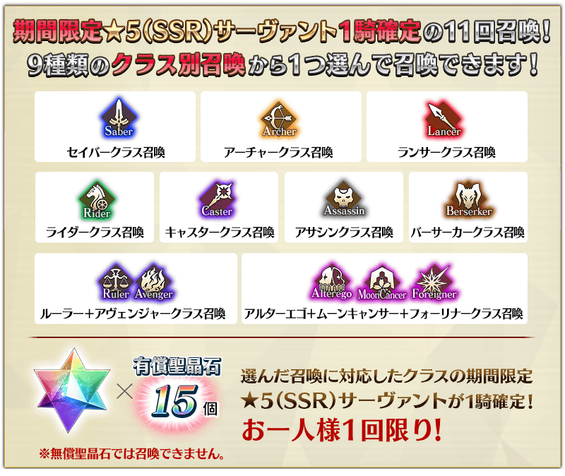
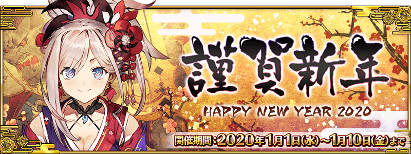

◆「福袋召喚2020(職階別)」期間◆
期間:2019年12月31日(二) 23:00～2020年1月10日(五) 11:59
以期間限定舉辦「福袋召喚2020(職階別)」！

詳情請在聖晶石召喚畫面左下的召喚詳細確認。
確定1位期間限定★5(SSR)從者1騎、確定1張★4(SR)以上、確定1位★3(R)以上的從者！ ※確定★4(SR)以上包含從者和概念禮裝。 ※本頁面皆為開發中圖片。會有與實際圖片相異的情況。
◆有關聖晶石的注意◆
※用有償聖晶石30個才能召喚。無法用無償聖晶石召喚。
※聖晶石購入時賦予的「附贈(オマケ)」是做為無償聖晶石而不包含在有償聖晶石的個數，請注意別搞錯。另外，持有聖晶石的細項，可從持有道具一覧確認。
◆有關從者的注意◆
※請注意「★5(SSR)楊貴妃」為抽出對象外。(12月31日(二) 23:00追記)
※會從「福袋召喚2020(職階別)」被抽出的★5(SSR)從者只限在2019年12月以前登場的期間限定從者為對象，不會抽出會從故事召喚被抽出的★5(SSR)從者。
※「福袋召喚2020(職階別)」中選擇「Alterego＋MoonCancer＋Foreigner職階召喚」以外的情況，只限選擇職階的從者會被抽出，不會抽出其他的職階。
※「福袋召喚2020(職階別)」中選擇「Alterego＋MoonCancer＋Foreigner職階召喚」的情況，會被抽出的★4(SR)、★3(R)從者為所有的職階對象。
※召喚對象對應從9種選擇召喚的確定1位期間限定★5(SSR)從者以外，也包含一部份的★4(SR)、★3(R)從者及概念禮裝。
※透過章節進行追加的★4(SR)以下從者，就算通過各章前也能入手。
※請注意★4(SR)以下的期間限定從者為被抽出對象外。
※關於隱藏真名尚未判明的從者，透過主線關卡的進行會讓從者及一部份份寶具的名稱變化。
◆有關從者真名的注意◆
在2018年12月31日(二) 23:00以後新配信的主線故事及期間限定活動、一部份關卡、宣傳活動及召喚中，會顯示隱藏真名的對象從者真名。
※2018年12月31日(一) 22:59前已經配信的主線故事、復刻活動、一部份關卡中不在此限。
【12月31日(二) 23:00追記】
◆有關概念禮裝的注意◆
※期間限定概念禮裝的「★5(SSR)空道とし」「★4(SR)晴れの曙」「★3(R)ぼくらはともだち」也會登場。
※請注意成為抽出對象期間限定概念禮裝只有「★5(SSR)空道とし」「★4(SR)晴れの曙」「★3(R)ぼくらはともだち」，其他的期間限定概念禮裝是被抽出對象外。
※「★3(R)ぼくらはともだち」在Pick Up期間中，也能靠友情點數召喚獲得。
※請注意自友情點數召喚抽出的「★3(R)ぼくらはともだち」在自動變還設定登錄★3(R)概念禮裝的情況，會變成自動變還的對象。
| 稀有度 | 從者名 |
|---|---|
| ★★★★★ | 亞瑟・潘德拉剛〔Prototype〕 |
| ★★★★★ | 阿斯托爾福 |
| ★★★★★ | 沖田總司 |
| ★★★★★ | 西格魯德 |
| ★★★★★ | 尼祿・克勞狄烏斯〔Bride〕 |
| ★★★★★ | 紅閻魔 |
| ★★★★★ | 宮本武藏 |
| ★★★★★ | 兩儀式 |
| 稀有度 | 從者名 |
|---|---|
| ★★★★★ | 阿爾托莉亞・潘德拉剛 |
| ★★★★★ | 伊絲塔 |
| ★★★★★ | 吉爾伽美什 |
| ★★★★★ | 貞德 |
| ★★★★★ | 新宿的Archer(詹姆斯・莫里亞蒂) |
| ★★★★★ | 超人俄里翁 |
| 稀有度 | 從者名 |
|---|---|
| ★★★★★ | 艾蕾修卡 |
| ★★★★★ | 斯卡哈 |
| ★★★★★ | 玉藻前 |
| ★★★★★ | 布倫希爾德 |
| 稀有度 | 從者名 |
|---|---|
| ★★★★★ | 阿爾托莉亞・潘德拉剛〔Alter〕 |
| ★★★★★ | 伊凡雷帝 |
| ★★★★★ | 伊斯坎達爾 |
| ★★★★★ | 司馬懿〔萊涅絲〕 |
| ★★★★★ | 李奧納多・達文西 |
| 稀有度 | 從者名 |
|---|---|
| ★★★★★ | 伊莉雅絲菲爾・馮・愛因茲貝倫 |
| ★★★★★ | 斯卡哈＝斯卡蒂 |
| ★★★★★ | 尼祿・克勞狄烏斯 |
| ★★★★★ | 梅林 |
| ★★★★★ | 紫式部 |
| ★★★★★ | 李奧納多・達文西 |
| 稀有度 | 從者名 |
|---|---|
| ★★★★★ | 伽摩 |
| ★★★★★ | 克麗奧佩脫拉 |
| ★★★★★ | 酒吞童子 |
| ★★★★★ | 賽米拉米斯 |
| ★★★★★ | 謎之女主角X |
| ★★★★★ | “山之翁” |
| 稀有度 | 從者名 |
|---|---|
| ★★★★★ | 阿周那〔Alter〕 |
| ★★★★★ | 坂田金時 |
| ★★★★★ | 謎之女主角X〔Alter〕 |
| ★★★★★ | 土方歲三 |
| ★★★★★ | 源賴光 |
| ★★★★★ | 宮本武藏 |
| 職階 | 稀有度 | 從者名 |
|---|---|---|
| Ruler | ★★★★★ | 天草四郎 |
| ★★★★★ | 阿爾托莉亞・潘德拉剛 | |
| ★★★★★ | 始皇帝 | |
| ★★★★★ | 夏洛克・福爾摩斯 | |
| Avenger | ★★★★★ | 巖窟王 |
| ★★★★★ | 貞德〔Alter〕 | |
| ★★★★★ | 太空・伊絲塔 | |
| ★★★★★ | 魔王信長(織田信長) |
※「★5(SSR)織田信長」靈基再臨第3階段後名稱會變化成「★5(SSR)魔王信長」。
| 職階 | 稀有度 | 從者名 |
|---|---|---|
| Alterego | ★★★★★ | 沖田總司〔Alter〕 |
| ★★★★★ | 帝王花 | |
| ★★★★★ | 殺生院祈荒 | |
| ★★★★★ | Meltryllis | |
| MoonCancer | ★★★★★ | BB |
| Foreigner | ★★★★★ | 阿比蓋爾・威廉斯 |
| ★★★★★ | 葛飾北齋 |
※請注意「★5(SSR)楊貴妃」為抽出對象外。(12月31日(二) 23:00追記)
【12月31日(二) 23:00追記】
其他還有，「2020年新年宣傳活動」和期間限定「New Year 2020 Pick Up召喚(每日交替)」同時舉辦！
關於詳情，請自下述橫幅確認。
■「2020年新年宣傳活動」詳細情報
